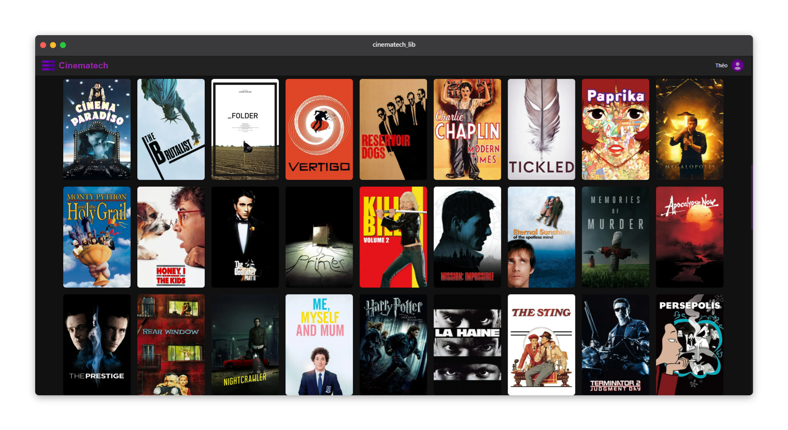

Cinematech
A personal streaming service for movies and tv shows
Technos used :



Discover Movies
Browse the latest releases and discover content matching your interests.
Find Movies
Search your favorite movie.
Continue Watching
Don't lose your timecode or your episode, everything is fine.
Split screens
Create profiles and accounts for everyone.